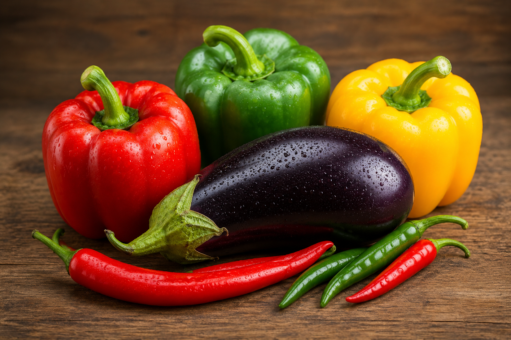
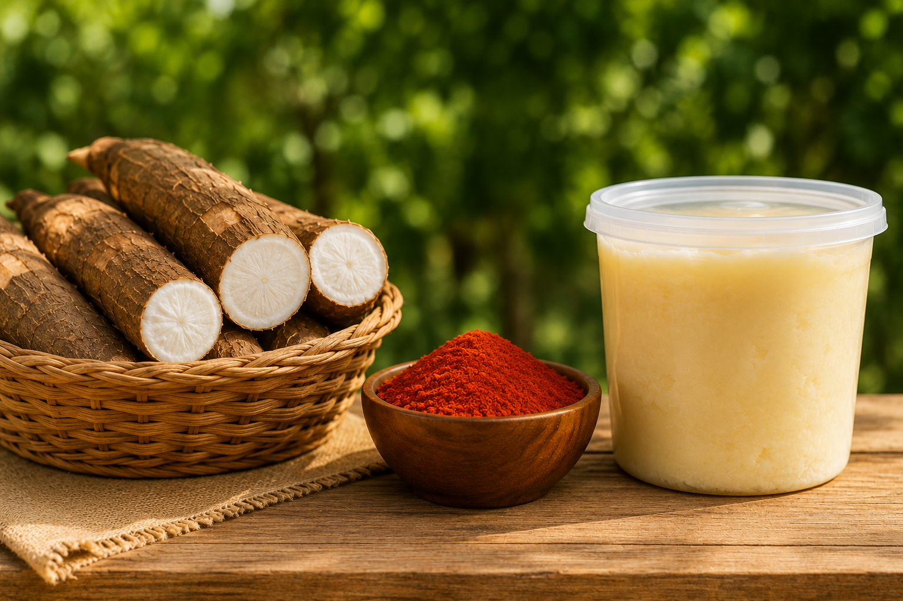
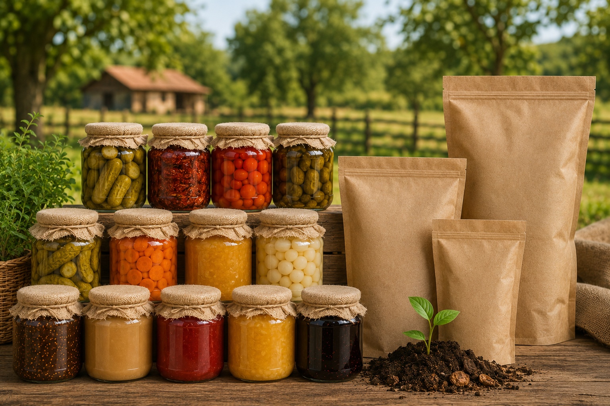
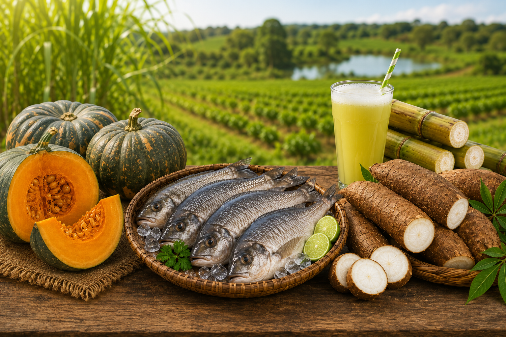
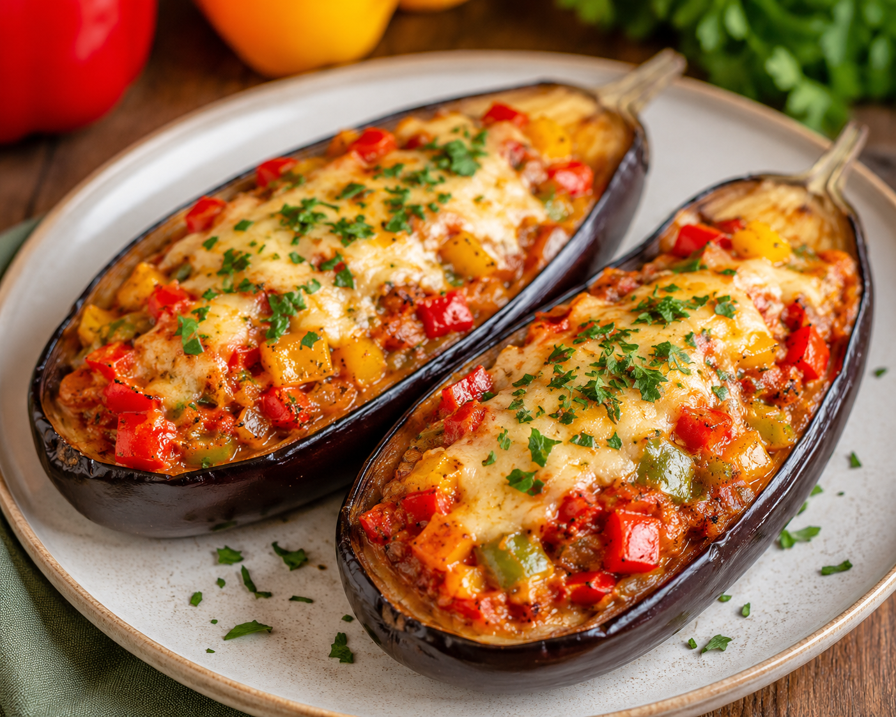
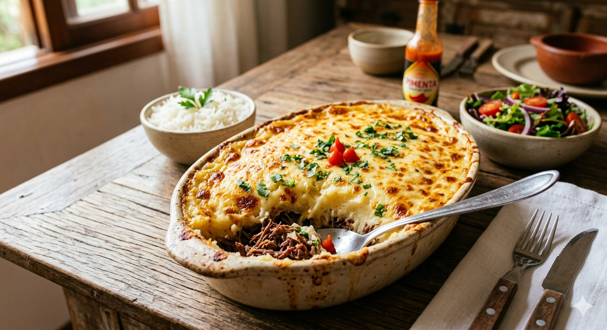
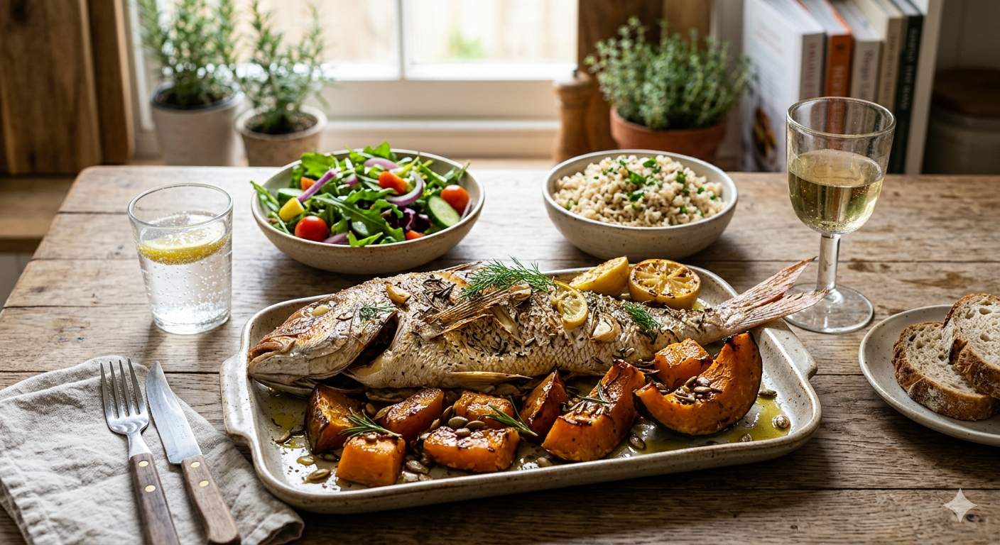
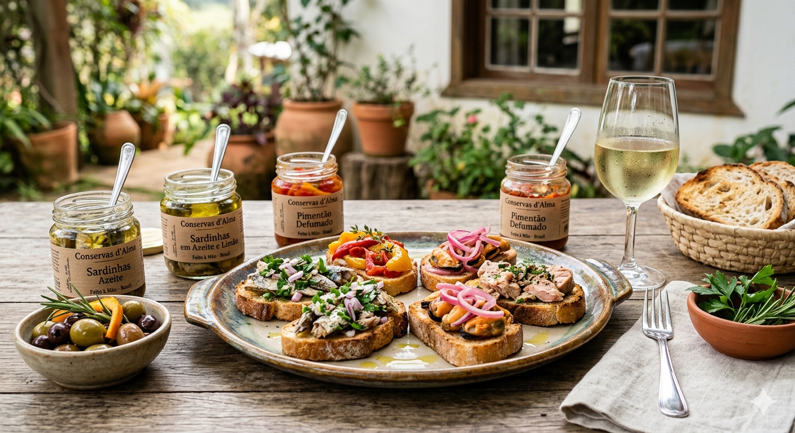

Plataforma Digital para fortalecer a agricultura sustentável e aproximar produtores e consumidores.
Clique e conecte-se!
Leve suas figurinhas repetidas e participe da troca do Álbum da Copa do Mundo na feira do dia 05, a partir das 18h!
Atenção! Hoje é dia de feira!
Local: Praça dos Expedicionários, Santa Cruz de Monte Castelo
Data: 05 de Junho
Horário: A partir das 16h
Produtor de hortaliças e temperos, com destaque para pimentões coloridos, berinjelas e pimentas.
Comercializa mandioca fresca e coloral artesanal produzido na região.
Especializada em conservas artesanais e produtos voltados para compostagem doméstica.
Produção diversificada com abóboras, peixes, mandioca e caldo de cana.

Produzido por Andrei

Produzido pela Barraca da Loreci

Produzido por Dona Maria da Vila Rural

Produzido pela Família Sgorlon

Receita preparada com berinjela, pimentões coloridos e temperos frescos produzidos por Andrei.

Prato tradicional feito com mandioca da Barraca da Loreci e temperado com coloral artesanal.

Receita utilizando peixe fresco e abóbora produzidos pela Família Sgorlon.

Combinação de conservas produzidas por Dona Maria da Vila Rural, ideal para servir como entrada.
Confira os produtos típicos de cada mês na Feira do Produtor.
Abacaxi, Manga, Melancia, Uva, Figo, Tomate
Abacate, Ameixa, Goiaba, Pêssego, Pera
Abacate, Banana, Goiaba, Limão, Mamão
Abacate, Caqui, Maçã, Pera, Limão
Caqui, Maçã, Laranja, Tangerina, Maracujá
Laranja, Mexerica, Morango, Couve, Brócolis
Morango, Laranja, Tangerina, Couve-flor
Morango, Laranja, Tangerina, Alface
Morango, Amora, Pêssego, Ervilha
Acerola, Amora, Pêssego, Jabuticaba
Acerola, Manga, Melancia, Milho-verde
Manga, Melancia, Uva, Lichia, Figo
A Feira do Produtor fortalece a agricultura familiar, gera renda para pequenos produtores rurais e incentiva práticas sustentáveis de produção. Além de aproximar produtores e consumidores, a feira contribui para o desenvolvimento da economia local, reduz o desperdício de alimentos e valoriza o trabalho realizado no campo.
Média de experiência dos produtores entrevistados.
Dos entrevistados utilizam práticas preventivas e sustentáveis no controle de pragas.
Das sobras da produção recebem algum tipo de reaproveitamento.
Dos produtores utilizam resíduos na compostagem ou alimentação animal.
As entrevistas realizadas com produtores participantes da feira demonstram a adoção de práticas agrícolas sustentáveis. Todos os entrevistados relataram priorizar métodos preventivos para o controle de pragas e doenças, incluindo monitoramento constante das lavouras, manejo adequado do solo e redução do uso de produtos químicos. Essas ações contribuem para a preservação ambiental e para a oferta de alimentos de qualidade à população.
Outro aspecto relevante identificado foi o aproveitamento das sobras da produção. Os alimentos que não são comercializados são destinados à alimentação animal, compostagem, consumo familiar ou doação. Esse reaproveitamento reduz desperdícios, fortalece a economia circular no meio rural e demonstra o compromisso dos produtores com a sustentabilidade e o uso responsável dos recursos.